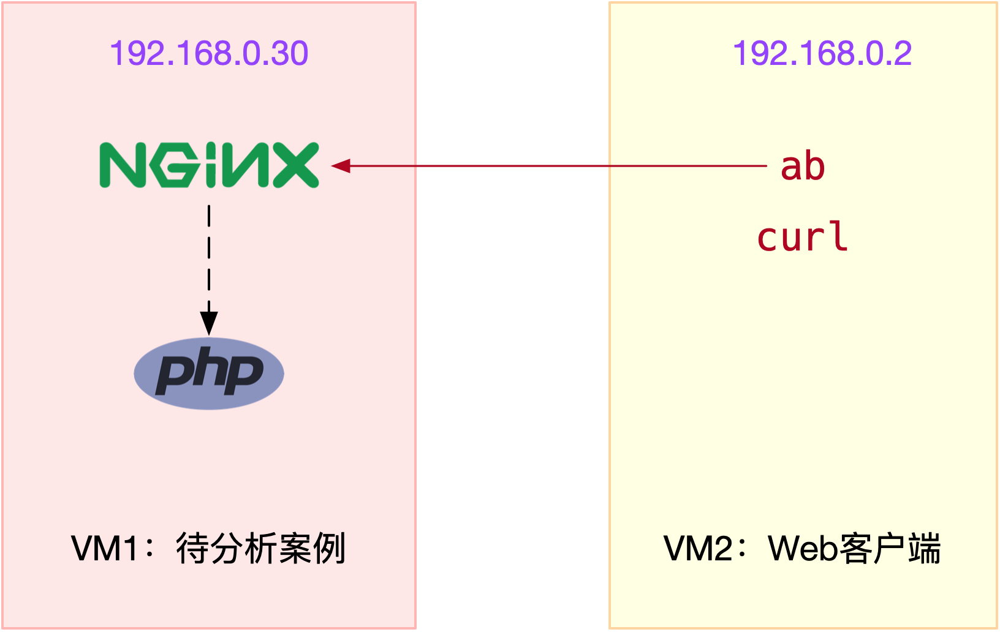
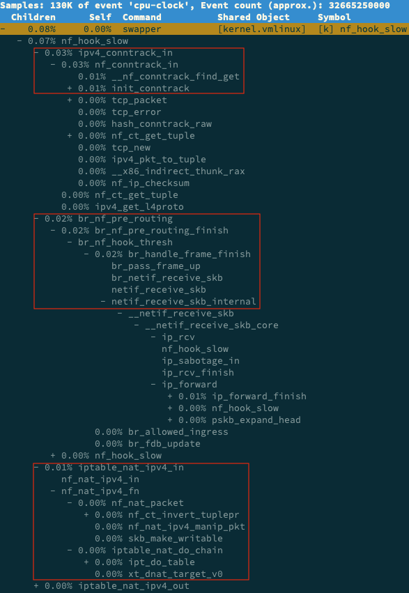

- 00 开篇词 别再让Linux性能问题成为你的绊脚石.md.html
- 01 如何学习Linux性能优化？.md.html
- 02 基础篇：到底应该怎么理解“平均负载”？.md.html
- 03 基础篇：经常说的 CPU 上下文切换是什么意思？（上）.md.html
- 04 基础篇：经常说的 CPU 上下文切换是什么意思？（下）.md.html
- 05 基础篇：某个应用的CPU使用率居然达到100%，我该怎么办？.md.html
- 06 案例篇：系统的 CPU 使用率很高，但为啥却找不到高 CPU 的应用？.md.html
- 07 案例篇：系统中出现大量不可中断进程和僵尸进程怎么办？（上）.md.html
- 08 案例篇：系统中出现大量不可中断进程和僵尸进程怎么办？（下）.md.html
- 09 基础篇：怎么理解Linux软中断？.md.html
- 10 案例篇：系统的软中断CPU使用率升高，我该怎么办？.md.html
- 11 套路篇：如何迅速分析出系统CPU的瓶颈在哪里？.md.html
- 12 套路篇：CPU 性能优化的几个思路.md.html
- 13 答疑（一）：无法模拟出 RES 中断的问题，怎么办？.md.html
- 14 答疑（二）：如何用perf工具分析Java程序？.md.html
- 15 基础篇：Linux内存是怎么工作的？.md.html
- 16 基础篇：怎么理解内存中的Buffer和Cache？.md.html
- 17 案例篇：如何利用系统缓存优化程序的运行效率？.md.html
- 18 案例篇：内存泄漏了，我该如何定位和处理？.md.html
- 19 案例篇：为什么系统的Swap变高了（上）.md.html
- 20 案例篇：为什么系统的Swap变高了？（下）.md.html
- 21 套路篇：如何“快准狠”找到系统内存的问题？.md.html
- 22 答疑（三）：文件系统与磁盘的区别是什么？.md.html
- 23 基础篇：Linux 文件系统是怎么工作的？.md.html
- 24 基础篇：Linux 磁盘I_O是怎么工作的（上）.md.html
- 25 基础篇：Linux 磁盘I_O是怎么工作的（下）.md.html
- 26 案例篇：如何找出狂打日志的“内鬼”？.md.html
- 27 案例篇：为什么我的磁盘I_O延迟很高？.md.html
- 28 案例篇：一个SQL查询要15秒，这是怎么回事？.md.html
- 29 案例篇：Redis响应严重延迟，如何解决？.md.html
- 30 套路篇：如何迅速分析出系统I_O的瓶颈在哪里？.md.html
- 31 套路篇：磁盘 I_O 性能优化的几个思路.md.html
- 32 答疑（四）：阻塞、非阻塞 I_O 与同步、异步 I_O 的区别和联系.md.html
- 33 关于 Linux 网络，你必须知道这些（上）.md.html
- 34 关于 Linux 网络，你必须知道这些（下）.md.html
- 35 基础篇：C10K 和 C1000K 回顾.md.html
- 36 套路篇：怎么评估系统的网络性能？.md.html
- 37 案例篇：DNS 解析时快时慢，我该怎么办？.md.html
- 38 案例篇：怎么使用 tcpdump 和 Wireshark 分析网络流量？.md.html
- 39 案例篇：怎么缓解 DDoS 攻击带来的性能下降问题？.md.html
- 40 案例篇：网络请求延迟变大了，我该怎么办？.md.html
- 41 案例篇：如何优化 NAT 性能？（上）.md.html
- 42 案例篇：如何优化 NAT 性能？（下）.md.html
- 43 套路篇：网络性能优化的几个思路（上）.md.html
- 44 套路篇：网络性能优化的几个思路（下）.md.html
- 45 答疑（五）：网络收发过程中，缓冲区位置在哪里？.md.html
- 46 案例篇：为什么应用容器化后，启动慢了很多？.md.html
- 47 案例篇：服务器总是时不时丢包，我该怎么办？（上）.md.html
- 48 案例篇：服务器总是时不时丢包，我该怎么办？（下）.md.html
- 49 案例篇：内核线程 CPU 利用率太高，我该怎么办？.md.html
- 50 案例篇：动态追踪怎么用？（上）.md.html
- 51 案例篇：动态追踪怎么用？（下）.md.html
- 52 案例篇：服务吞吐量下降很厉害，怎么分析？.md.html
- 53 套路篇：系统监控的综合思路.md.html
- 54 套路篇：应用监控的一般思路.md.html
- 55 套路篇：分析性能问题的一般步骤.md.html
- 56 套路篇：优化性能问题的一般方法.md.html
- 57 套路篇：Linux 性能工具速查.md.html
- 58 答疑（六）：容器冷启动如何性能分析？.md.html
- 加餐（一） 书单推荐：性能优化和Linux 系统原理.md.html
- 加餐（二） 书单推荐：网络原理和 Linux 内核实现.md.html
- 用户故事 “半路出家 ”，也要顺利拿下性能优化！.md.html
- 用户故事 运维和开发工程师们怎么说？.md.html
- 结束语 愿你攻克性能难关.md.html
- 捐赠
42 案例篇：如何优化 NAT 性能？（下）
你好，我是倪朋飞。
上一节，我们学习了 NAT 的原理，明白了如何在 Linux 中管理 NAT 规则。先来简单复习一下。
NAT 技术能够重写 IP 数据包的源 IP 或目的 IP，所以普遍用来解决公网 IP 地址短缺的问题。它可以让网络中的多台主机，通过共享同一个公网 IP 地址，来访问外网资源。同时，由于 NAT 屏蔽了内网网络，也为局域网中机器起到安全隔离的作用。
Linux 中的NAT ，基于内核的连接跟踪模块实现。所以，它维护每个连接状态的同时，也对网络性能有一定影响。那么，碰到 NAT 性能问题时，我们又该怎么办呢？
接下来，我就通过一个案例，带你学习 NAT 性能问题的分析思路。
案例准备
下面的案例仍然基于 Ubuntu 18.04，同样适用于其他的 Linux 系统。我使用的案例环境是这样的：
机器配置：2 CPU，8GB 内存。
预先安装 docker、tcpdump、curl、ab、SystemTap 等工具，比如
# Ubuntu
$ apt-get install -y docker.io tcpdump curl apache2-utils
# CentOS
$ curl -fsSL https://get.docker.com | sh
$ yum install -y tcpdump curl httpd-tools
大部分工具，你应该都比较熟悉，这里我简单介绍一下 SystemTap 。
SystemTap 是 Linux 的一种动态追踪框架，它把用户提供的脚本，转换为内核模块来执行，用来监测和跟踪内核的行为。关于它的原理，你暂时不用深究，后面的内容还会介绍到。这里你只要知道怎么安装就可以了：
# Ubuntu
apt-get install -y systemtap-runtime systemtap
# Configure ddebs source
echo "deb http://ddebs.ubuntu.com $(lsb_release -cs) main restricted universe multiverse
deb http://ddebs.ubuntu.com $(lsb_release -cs)-updates main restricted universe multiverse
deb http://ddebs.ubuntu.com $(lsb_release -cs)-proposed main restricted universe multiverse" | \
sudo tee -a /etc/apt/sources.list.d/ddebs.list
# Install dbgsym
apt-key adv --keyserver keyserver.ubuntu.com --recv-keys F2EDC64DC5AEE1F6B9C621F0C8CAB6595FDFF622
apt-get update
apt install ubuntu-dbgsym-keyring
stap-prep
apt-get install linux-image-`uname -r`-dbgsym
# CentOS
yum install systemtap kernel-devel yum-utils kernel
stab-prep
本次案例还是我们最常见的 Nginx，并且会用 ab 作为它的客户端，进行压力测试。案例中总共用到两台虚拟机，我画了一张图来表示它们的关系。

接下来，我们打开两个终端，分别 SSH 登录到两台机器上（以下步骤，假设终端编号与图示VM 编号一致），并安装上面提到的这些工具。注意，curl 和 ab 只需要在客户端 VM（即 VM2）中安装。
同以前的案例一样，下面的所有命令都默认以 root 用户运行。如果你是用普通用户身份登陆系统，请运行 sudo su root 命令，切换到 root 用户。
如果安装过程中有什么问题，同样鼓励你先自己搜索解决，解决不了的，可以在留言区向我提问。如果你以前已经安装过了，就可以忽略这一点了。
接下来，我们就进入到案例环节。
案例分析
为了对比 NAT 带来的性能问题，我们首先运行一个不用 NAT 的 Nginx 服务，并用 ab 测试它的性能。
在终端一中，执行下面的命令，启动 Nginx，注意选项 –network=host ，表示容器使用 Host 网络模式，即不使用 NAT：
$ docker run --name nginx-hostnet --privileged --network=host -itd feisky/nginx:80
然后到终端二中，执行 curl 命令，确认 Nginx 正常启动：
$ curl http://192.168.0.30/
...
<p><em>Thank you for using nginx.</em></p>
</body>
</html>
继续在终端二中，执行 ab 命令，对 Nginx 进行压力测试。不过在测试前要注意，Linux 默认允许打开的文件描述数比较小，比如在我的机器中，这个值只有 1024：
# open files
$ ulimit -n
1024
所以，执行 ab 前，先要把这个选项调大，比如调成 65536:
# 临时增大当前会话的最大文件描述符数
$ ulimit -n 65536
接下来，再去执行 ab 命令，进行压力测试：
# -c表示并发请求数为5000，-n表示总的请求数为10万
# -r表示套接字接收错误时仍然继续执行，-s表示设置每个请求的超时时间为2s
$ ab -c 5000 -n 100000 -r -s 2 http://192.168.0.30/
...
Requests per second: 6576.21 [#/sec] (mean)
Time per request: 760.317 [ms] (mean)
Time per request: 0.152 [ms] (mean, across all concurrent requests)
Transfer rate: 5390.19 [Kbytes/sec] received
Connection Times (ms)
min mean[+/-sd] median max
Connect: 0 177 714.3 9 7338
Processing: 0 27 39.8 19 961
Waiting: 0 23 39.5 16 951
Total: 1 204 716.3 28 7349
...
关于 ab 输出界面的含义，我已经在 怎么评估系统的网络性能 文章中介绍过，忘了的话自己先去复习。从这次的界面，你可以看出：
每秒请求数（Requests per second）为 6576；
每个请求的平均延迟（Time per request）为 760ms；
建立连接的平均延迟（Connect）为 177ms。
记住这几个数值，这将是接下来案例的基准指标。
注意，你的机器中，运行结果跟我的可能不一样，不过没关系，并不影响接下来的案例分析思路。
接着，回到终端一，停止这个未使用NAT的Nginx应用：
$ docker rm -f nginx-hostnet
再执行下面的命令，启动今天的案例应用。案例应用监听在 8080 端口，并且使用了 DNAT ，来实现 Host 的 8080 端口，到容器的 8080 端口的映射关系：
$ docker run --name nginx --privileged -p 8080:8080 -itd feisky/nginx:nat
Nginx 启动后，你可以执行 iptables 命令，确认 DNAT 规则已经创建：
$ iptables -nL -t nat
Chain PREROUTING (policy ACCEPT)
target prot opt source destination
DOCKER all -- 0.0.0.0/0 0.0.0.0/0 ADDRTYPE match dst-type LOCAL
...
Chain DOCKER (2 references)
target prot opt source destination
RETURN all -- 0.0.0.0/0 0.0.0.0/0
DNAT tcp -- 0.0.0.0/0 0.0.0.0/0 tcp dpt:8080 to:172.17.0.2:8080
你可以看到，在 PREROUTING 链中，目的为本地的请求，会转到 DOCKER 链；而在 DOCKER 链中，目的端口为 8080 的 tcp 请求，会被 DNAT 到 172.17.0.2 的 8080 端口。其中，172.17.0.2 就是 Nginx 容器的 IP 地址。
接下来，我们切换到终端二中，执行 curl 命令，确认 Nginx 已经正常启动：
$ curl http://192.168.0.30:8080/
...
<p><em>Thank you for using nginx.</em></p>
</body>
</html>
然后，再次执行上述的 ab 命令，不过这次注意，要把请求的端口号换成 8080：
# -c表示并发请求数为5000，-n表示总的请求数为10万
# -r表示套接字接收错误时仍然继续执行，-s表示设置每个请求的超时时间为2s
$ ab -c 5000 -n 100000 -r -s 2 http://192.168.0.30:8080/
...
apr_pollset_poll: The timeout specified has expired (70007)
Total of 5602 requests completed
果然，刚才正常运行的 ab ，现在失败了，还报了连接超时的错误。运行 ab 时的-s 参数，设置了每个请求的超时时间为 2s，而从输出可以看到，这次只完成了 5602 个请求。
既然是为了得到 ab 的测试结果，我们不妨把超时时间延长一下试试，比如延长到 30s。延迟增大意味着要等更长时间，为了快点得到结果，我们可以同时把总测试次数，也减少到 10000:
$ ab -c 5000 -n 10000 -r -s 30 http://192.168.0.30:8080/
...
Requests per second: 76.47 [#/sec] (mean)
Time per request: 65380.868 [ms] (mean)
Time per request: 13.076 [ms] (mean, across all concurrent requests)
Transfer rate: 44.79 [Kbytes/sec] received
Connection Times (ms)
min mean[+/-sd] median max
Connect: 0 1300 5578.0 1 65184
Processing: 0 37916 59283.2 1 130682
Waiting: 0 2 8.7 1 414
Total: 1 39216 58711.6 1021 130682
...
再重新看看 ab 的输出，这次的结果显示：
每秒请求数（Requests per second）为 76；
每个请求的延迟（Time per request）为 65s；
建立连接的延迟（Connect）为 1300ms。
显然，每个指标都比前面差了很多。
那么，碰到这种问题时，你会怎么办呢？你可以根据前面的讲解，先自己分析一下，再继续学习下面的内容。
在上一节，我们使用 tcpdump 抓包的方法，找出了延迟增大的根源。那么今天的案例，我们仍然可以用类似的方法寻找线索。不过，现在换个思路，因为今天我们已经事先知道了问题的根源——那就是 NAT。
回忆一下Netfilter 中，网络包的流向以及 NAT 的原理，你会发现，要保证 NAT 正常工作，就至少需要两个步骤：
第一，利用 Netfilter 中的钩子函数（Hook），修改源地址或者目的地址。
第二，利用连接跟踪模块 conntrack ，关联同一个连接的请求和响应。
是不是这两个地方出现了问题呢？我们用前面提到的动态追踪工具 SystemTap 来试试。
由于今天案例是在压测场景下，并发请求数大大降低，并且我们清楚知道 NAT 是罪魁祸首。所以，我们有理由怀疑，内核中发生了丢包现象。
我们可以回到终端一中，创建一个 dropwatch.stp 的脚本文件，并写入下面的内容：
#! /usr/bin/env stap
############################################################
# Dropwatch.stp
# Author: Neil Horman <[email protected]>
# An example script to mimic the behavior of the dropwatch utility
# http://fedorahosted.org/dropwatch
############################################################
# Array to hold the list of drop points we find
global locations
# Note when we turn the monitor on and off
probe begin { printf("Monitoring for dropped packets\n") }
probe end { printf("Stopping dropped packet monitor\n") }
# increment a drop counter for every location we drop at
probe kernel.trace("kfree_skb") { locations[$location] <<< 1 }
# Every 5 seconds report our drop locations
probe timer.sec(5)
{
printf("\n")
foreach (l in locations-) {
printf("%d packets dropped at %s\n",
@count(locations[l]), symname(l))
}
delete locations
}
这个脚本，跟踪内核函数 kfree_skb() 的调用，并统计丢包的位置。文件保存好后，执行下面的 stap 命令，就可以运行丢包跟踪脚本。这里的stap，是 SystemTap 的命令行工具：
$ stap --all-modules dropwatch.stp
Monitoring for dropped packets
当你看到 probe begin 输出的 “Monitoring for dropped packets” 时，表明 SystemTap 已经将脚本编译为内核模块，并启动运行了。
接着，我们切换到终端二中，再次执行 ab 命令：
$ ab -c 5000 -n 10000 -r -s 30 http://192.168.0.30:8080/
然后，再次回到终端一中，观察 stap 命令的输出：
10031 packets dropped at nf_hook_slow
676 packets dropped at tcp_v4_rcv
7284 packets dropped at nf_hook_slow
268 packets dropped at tcp_v4_rcv
你会发现，大量丢包都发生在 nf_hook_slow 位置。看到这个名字，你应该能想到，这是在 Netfilter Hook 的钩子函数中，出现丢包问题了。但是不是 NAT，还不能确定。接下来，我们还得再跟踪 nf_hook_slow 的执行过程，这一步可以通过 perf 来完成。
我们切换到终端二中，再次执行 ab 命令：
$ ab -c 5000 -n 10000 -r -s 30 http://192.168.0.30:8080/
然后，再次切换回终端一，执行 perf record 和 perf report 命令
# 记录一会（比如30s）后按Ctrl+C结束
$ perf record -a -g -- sleep 30
# 输出报告
$ perf report -g graph,0
在 perf report 界面中，输入查找命令 / 然后，在弹出的对话框中，输入 nf_hook_slow；最后再展开调用栈，就可以得到下面这个调用图：

从这个图我们可以看到，nf_hook_slow 调用最多的有三个地方，分别是 ipv4_conntrack_in、br_nf_pre_routing 以及 iptable_nat_ipv4_in。换言之，nf_hook_slow 主要在执行三个动作。
第一，接收网络包时，在连接跟踪表中查找连接，并为新的连接分配跟踪对象（Bucket）。
第二，在 Linux 网桥中转发包。这是因为案例 Nginx 是一个 Docker 容器，而容器的网络通过网桥来实现；
第三，接收网络包时，执行 DNAT，即把 8080 端口收到的包转发给容器。
到这里，我们其实就找到了性能下降的三个来源。这三个来源，都是 Linux 的内核机制，所以接下来的优化，自然也是要从内核入手。
根据以前各个资源模块的内容，我们知道，Linux 内核为用户提供了大量的可配置选项，这些选项可以通过 proc 文件系统，或者 sys 文件系统，来查看和修改。除此之外，你还可以用 sysctl 这个命令行工具，来查看和修改内核配置。
比如，我们今天的主题是 DNAT，而 DNAT 的基础是 conntrack，所以我们可以先看看，内核提供了哪些 conntrack 的配置选项。
我们在终端一中，继续执行下面的命令：
$ sysctl -a | grep conntrack
net.netfilter.nf_conntrack_count = 180
net.netfilter.nf_conntrack_max = 1000
net.netfilter.nf_conntrack_buckets = 65536
net.netfilter.nf_conntrack_tcp_timeout_syn_recv = 60
net.netfilter.nf_conntrack_tcp_timeout_syn_sent = 120
net.netfilter.nf_conntrack_tcp_timeout_time_wait = 120
...
你可以看到，这里最重要的三个指标：
net.netfilter.nf_conntrack_count，表示当前连接跟踪数；
net.netfilter.nf_conntrack_max，表示最大连接跟踪数；
net.netfilter.nf_conntrack_buckets，表示连接跟踪表的大小。
所以，这个输出告诉我们，当前连接跟踪数是 180，最大连接跟踪数是 1000，连接跟踪表的大小，则是 65536。
回想一下前面的 ab 命令，并发请求数是 5000，而请求数是 100000。显然，跟踪表设置成，只记录 1000 个连接，是远远不够的。
实际上，内核在工作异常时，会把异常信息记录到日志中。比如前面的 ab 测试，内核已经在日志中报出了 “nf_conntrack: table full” 的错误。执行 dmesg 命令，你就可以看到：
$ dmesg | tail
[104235.156774] nf_conntrack: nf_conntrack: table full, dropping packet
[104243.800401] net_ratelimit: 3939 callbacks suppressed
[104243.800401] nf_conntrack: nf_conntrack: table full, dropping packet
[104262.962157] nf_conntrack: nf_conntrack: table full, dropping packet
其中，net_ratelimit 表示有大量的日志被压缩掉了，这是内核预防日志攻击的一种措施。而当你看到 “nf_conntrack: table full” 的错误时，就表明 nf_conntrack_max 太小了。
那是不是，直接把连接跟踪表调大就可以了呢？调节前，你先得明白，连接跟踪表，实际上是内存中的一个哈希表。如果连接跟踪数过大，也会耗费大量内存。
其实，我们上面看到的 nf_conntrack_buckets，就是哈希表的大小。哈希表中的每一项，都是一个链表（称为 Bucket），而链表长度，就等于 nf_conntrack_max 除以 nf_conntrack_buckets。
比如，我们可以估算一下，上述配置的连接跟踪表占用的内存大小：
# 连接跟踪对象大小为376，链表项大小为16
nf_conntrack_max*连接跟踪对象大小+nf_conntrack_buckets*链表项大小
= 1000*376+65536*16 B
= 1.4 MB
接下来，我们将 nf_conntrack_max 改大一些，比如改成 131072（即nf_conntrack_buckets的2倍）：
$ sysctl -w net.netfilter.nf_conntrack_max=131072
$ sysctl -w net.netfilter.nf_conntrack_buckets=65536
然后再切换到终端二中，重新执行 ab 命令。注意，这次我们把超时时间也改回原来的 2s：
$ ab -c 5000 -n 100000 -r -s 2 http://192.168.0.30:8080/
...
Requests per second: 6315.99 [#/sec] (mean)
Time per request: 791.641 [ms] (mean)
Time per request: 0.158 [ms] (mean, across all concurrent requests)
Transfer rate: 4985.15 [Kbytes/sec] received
Connection Times (ms)
min mean[+/-sd] median max
Connect: 0 355 793.7 29 7352
Processing: 8 311 855.9 51 14481
Waiting: 0 292 851.5 36 14481
Total: 15 666 1216.3 148 14645
果然，现在你可以看到：
每秒请求数（Requests per second）为 6315（不用NAT时为6576）；
每个请求的延迟（Time per request）为 791ms（不用NAT时为760ms）；
建立连接的延迟（Connect）为 355ms（不用NAT时为177ms）。
这个结果，已经比刚才的测试好了很多，也很接近最初不用 NAT 时的基准结果了。
不过，你可能还是很好奇，连接跟踪表里，到底都包含了哪些东西？这里的东西，又是怎么刷新的呢？
实际上，你可以用 conntrack 命令行工具，来查看连接跟踪表的内容。比如：
# -L表示列表，-o表示以扩展格式显示
$ conntrack -L -o extended | head
ipv4 2 tcp 6 7 TIME_WAIT src=192.168.0.2 dst=192.168.0.96 sport=51744 dport=8080 src=172.17.0.2 dst=192.168.0.2 sport=8080 dport=51744 [ASSURED] mark=0 use=1
ipv4 2 tcp 6 6 TIME_WAIT src=192.168.0.2 dst=192.168.0.96 sport=51524 dport=8080 src=172.17.0.2 dst=192.168.0.2 sport=8080 dport=51524 [ASSURED] mark=0 use=1
从这里你可以发现，连接跟踪表里的对象，包括了协议、连接状态、源IP、源端口、目的IP、目的端口、跟踪状态等。由于这个格式是固定的，所以我们可以用 awk、sort 等工具，对其进行统计分析。
比如，我们还是以 ab 为例。在终端二启动 ab 命令后，再回到终端一中，执行下面的命令：
# 统计总的连接跟踪数
$ conntrack -L -o extended | wc -l
14289
# 统计TCP协议各个状态的连接跟踪数
$ conntrack -L -o extended | awk '/^.*tcp.*$/ {sum[$6]++} END {for(i in sum) print i, sum[i]}'
SYN_RECV 4
CLOSE_WAIT 9
ESTABLISHED 2877
FIN_WAIT 3
SYN_SENT 2113
TIME_WAIT 9283
# 统计各个源IP的连接跟踪数
$ conntrack -L -o extended | awk '{print $7}' | cut -d "=" -f 2 | sort | uniq -c | sort -nr | head -n 10
14116 192.168.0.2
172 192.168.0.96
这里统计了总连接跟踪数，TCP协议各个状态的连接跟踪数，以及各个源IP的连接跟踪数。你可以看到，大部分 TCP 的连接跟踪，都处于 TIME_WAIT 状态，并且它们大都来自于 192.168.0.2 这个 IP 地址（也就是运行 ab 命令的 VM2）。
这些处于 TIME_WAIT 的连接跟踪记录，会在超时后清理，而默认的超时时间是 120s，你可以执行下面的命令来查看：
$ sysctl net.netfilter.nf_conntrack_tcp_timeout_time_wait
net.netfilter.nf_conntrack_tcp_timeout_time_wait = 120
所以，如果你的连接数非常大，确实也应该考虑，适当减小超时时间。
除了上面这些常见配置，conntrack 还包含了其他很多配置选项，你可以根据实际需要，参考 nf_conntrack 的文档来配置。
小结
今天，我带你一起学习了，如何排查和优化 NAT 带来的性能问题。
由于 NAT 基于 Linux 内核的连接跟踪机制来实现。所以，在分析 NAT 性能问题时，我们可以先从 conntrack 角度来分析，比如用 systemtap、perf 等，分析内核中 conntrack 的行文；然后，通过调整 netfilter 内核选项的参数，来进行优化。
其实，Linux 这种通过连接跟踪机制实现的 NAT，也常被称为有状态的 NAT，而维护状态，也带来了很高的性能成本。
所以，除了调整内核行为外，在不需要状态跟踪的场景下（比如只需要按预定的IP和端口进行映射，而不需要动态映射），我们也可以使用无状态的 NAT （比如用 tc 或基于 DPDK 开发），来进一步提升性能。
思考
最后，给你留一个思考题。你有没有碰到过 NAT 带来的性能问题？你是怎么定位和分析它的根源的？最后，又是通过什么方法来优化解决的？你可以结合今天的案例，总结自己的思路。
欢迎在留言区和我讨论，也欢迎你把这篇文章分享给你的同事、朋友。我们一起在实战中演练，在交流中进步。
© 2019 - 2023 Liangliang Lee. Powered by gin and hexo-theme-book.